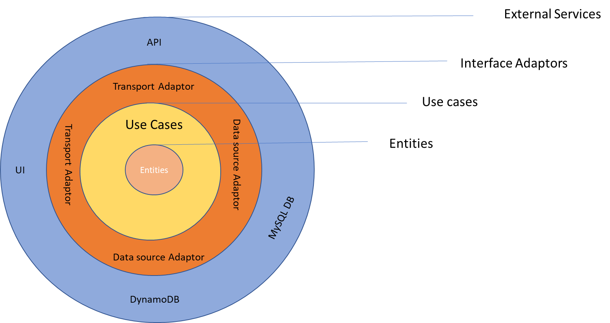
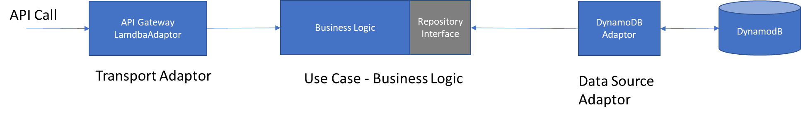
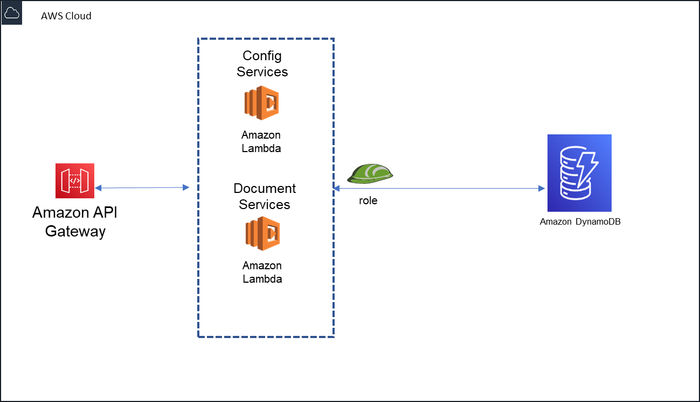

Posted on May 04, 2021
This article is about how to architect microservices and organize your codebase to develop serverless (using AWS api gateway, Lambda functions and AWS DynamoDB) backend microservices and core business logic such that, they are
Well-designed: business logic is independent of any external concerns (like database or ui or infrastructure or any other).
Flexible: Flexible to change the component as needs change. We should be able to swap the components as needed without re-writing lot of code.
Testable Code. Business logic/rules are fully testable independent of the external services depended on.
There are various architectural patterns that define these characteristics. I prefer to go with clean architecture approach by Robert C Martin.
In a nutshell, this is all about developing your concerns/modules (business logic, databases and external services handling) loosely coupled using dependency inversion (Another good video link on dependency injection). If done, correctly, this makes the system flexible, can be enhanced easily and testable.
This article has the following areas if you would like to jump back and forth instead of reading as one single item.
2. Implementation
3. Test Strategy
4. Example Code
5. Summary
Let us conceptualize how to apply this to our use case (Please refer to my earlier blog which describes the use case ).
Conceptually, high level architecture would look something like the one below (taken from the reference).
Fig 1: High Level Overview

The concepts that define the business logic are
Entities are domain objects. These are models that define the structure of your business entities. They are simply definitions for our use case.
Repositories are the interfaces to getting entities as well as creating and changing them.
Use cases are classes that orchestrate and perform domain actions. The implement complex business rules and validation logic specific to a domain.
With the above we should be able to define the business logic without having any knowledge of how the business logic is triggered or where the data is kept.
Outside the business logic are the Interface adaptors. Interface Adaptors are adaptors that convert data between use cases to external service or from external service to use cases. I would like categorize the adaptors into two types as below.
Data sources are adaptors to different storage implementations. These are used by business logic via dependency injection. A data source might be an adaptor to SQL database or NoSQL Database or CSV file. A data source implements the interface defined on the repository and stores the implementation of fetching and pushing the data. This enables business logic to persist the data without knowing how and where it is stored and makes business logic decoupled from database layer.
Transport Adaptors can trigger use cases to perform business logic. These are inputs to our application. For example, the most common transport adaptor for microservices is the HTTP API Layer and set of controllers that handle the request. Our use cases are not coupled to any particular transport adaptor or controller implementations. Our use cases can be triggered by an event or batch job or command line or an email.
The data that crosses the boundaries is simple data structures. When we pass the data across the boundaries, it is always in the form that is most convenient for the inner circle that is business logic. Make sure that anything in the outer circles does not have impact on the inner circles.
The business logic is used by different external services via transport adaptors. Each of these can create their variant of the application by plugging custom transport adaptors. Let us take an example from our use cases.
Our goal is to develop the serverless micro services using AWS API gateway and lambda proxy integration with database being AWS DynamoDB.
Fig 2: Flow for an API call using AWS API Gateway and Lambda

Below are the high-level steps
Steps:
When an API is called, it goes through AWS API gateway which is external to our system. This packages the request data and passes to AWS Lambda function as AWSProxyEVent. This is outside of our control till the request is passed to Lambda function.
Lamdba function is transport adaptor here. Let us call this as APIGatewayLamdbaAdaptor.
An instance of the business logic is made available to APIGatewayLamdbaAdaptor via dependency injection.
You have configuration object that wires network of dependencies and make the business logic available to lambda adaptor. In this case, it would be Business logic use case class and DynamoDBAdaptor class as data source plugged into the business logic service.
Note, your code does not use new operator to create use case class instance. It is called via dependency injection container (DI container). DI container knows how to write the dependencies. In this case, when the use case object is injected, datasource adaptor also injected into use case object.
APIGatewayLamdbaAdaptor starts to drive the process by calling business logic which in turn calls the repository interface implementation injected.
The flow is such that, transport adaptor interacts with business logic only. Business logic interacts with implementation of the repository interface. Business logic does not know any details about how the datasource saves/retrieves the data.
Output of the business logic is returned to the APIGatewayLambda adaptor which in turn feed to the caller of the API.
We know now that our architecture is well-designed and flexible. We can replace the DynamoDB with MySQL DB by changing the adaptor without impacting the rest of the system. Similarly, we can have the business logic called from other adaptors like event or cron job etc.
Let us look at how testable this approach is.
Reliable and faster test suite is a must have for better development velocity. Test strategy need to be thought as part of the initial design.
We followed two types of test cases first one is unit test cases and second one is integration test cases.
Our business logic is independent of external concerns and this must throughly. You define the test cases as per business spec and develop one by one. You leverage dependency injection to mock any kind of repository. This is essence of your application and must be tested 100% with unit test cases.
We know that databases work provided you are using it correctly and handling edge conditions appropriately. Your goal here is to have conformance to the repository interface and edge conditions handling like errors etc. We prefer to have this tested with real database as part of the integration testing than with mock database.
We have an end-to-end integration testing (from transport adaptor to business logic to data source adaptors) to make sure that everything is wired correctly. This is mainly going to be scenario-based testing like success cases and failure cases based on what scenarios are ideal for your use case.
With the above strategy, application is testable easily. Now we have system that is well-designed, flexible and testable. Let us look some sample code next.
This section presents the code base that is developed using typescript, NodeJS, AWS API gateway, Lambda function and DynamoDB (NoSQL database). I have used bottlejs as the dependency injection container and middy middleware engine to manage the boiler plate code in lambda function.
All the code base is available from GitHub. The code is organized as below.
I have used AWS CodeArtifact to deploy my code base specific NPM packages. GitHub as code repository. Decision to break the code base into multiple git repositories is driven by (a) code re-use (b) manage the dependencies such that build/deploy only those required to be build/deployed in your CI/CD cycle.
Fig below represents the backend microservices higher level design.

I have shared the code for config services only (and not for the document services) by making the relevant git repo public.
Components or modules are organized as below (bp stands for base platform).
common-libraries – all of the core npm modules application depends on. This is packaged as lambda layer when deployed. Click here to see the git repo.
common-utils – application specific utilities like logger, dependency injector and middy wrappers. This is deployed as npm package and published to AWS Codeartifact.
Click here to see the git repo contents.
bp-config-core --- Core logic and data sources (secondary adaptor) of base document platform. This is packaged as npm package. This way core logic is developed and tested independent of any external services.
app-deps – this contains application specific dependencies and how to build a lambda layer out of this. In this case, this is mainly, common-utils and bp-config-core. Click here to see the git repo contents.
bp-config-app -- This is backend application which uses the above packages. Here is where the application is wired using AWS apigatway/lambda and infrastructure as code (SAM template or AWS CloudFormation templates).
Click here to see the code base in github.
By conforming to simple rules and following dependency rules, you develop a system that is loosely coupled, flexible and testable. If any parts of the external system like database or web framework become obsolete over the time, you can replace them with less or no impact on the rest of system. Follow the DRY (don’t repeat yourself) rules to have the clean code.